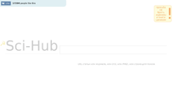
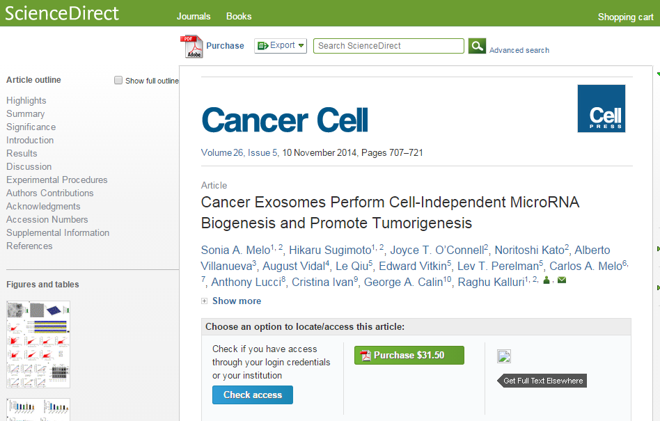

48 triệu nghiên cứu khoa học đã được phát hành miễn phí trên internet bởi nhà khoa học nữ Alexandra Elbakyan. Đây đa số là các nghiên cứu đã được bình duyệt và bà đã lập hẳn một trang web để chia sẻ các nghiên cứu này dễ dàng hơn tới những ai cần nó. Mặc dù có ý kiến cho rằng đây là việc làm vi phạm pháp luật, người khác lại cho rằng khoa học không thuộc sở hữu của ai,... nhưng hiện tại, nhiều người gọi bà là một Robin Hood của giới học thuật. Từ năm 2011, Elbakyan đã thành lập trang chia sẻ báo cáo khoa học Sci-Hub và người ta thường gọi đùa đây chính là Pirates Bay của giới học thuật. Elbakyan là một nhà thần kinh học người Nga. Xuất phát từ việc không thể truy cập tới các tài liệu để phục vụ nghiên cứu của cá nhân, bà đã thành lập trang web này để mọi người có hoàn cảnh như bà có thể dễ dàng tìm được tài liệu cần thiết. Cho tới hồi cuối năm ngoái, tòa án New York đã ra yêu cầu gỡ bỏ trang web này và Elbakyan quyết định phản đối với lập luận rằng khoa học không thuộc về bất cứ ai. Elbakyan cho biết: "Việc trả 32 đô la cho một nghiên cứu mà bạn cần chỉ để đọc lướt qua hàng chục hoặc hàng trăm trang báo cáo để phục vụ nghiên cứu là vô lý. Tôi lấy được những nghiên cứu đó bằng cách đánh cắp. Tất cả mọi người cần có quyền truy cập tới những kiến thức bất kể khả năng tài chính hoặc nguồn gốc của họ và đây là điều hoàn toàn hợp pháp." Việc làm này nghe có vẻ giống như Robin Hood thời hiện đại, "cướp của người giàu, chia cho người nghèo" nhưng thật ra, hiện nay không chỉ những người nghèo không thể tiếp cận được với các báo cáo khoa học, các tạp chí lớn bắt đóng phí hàng tháng,... mà cả những đại học lớn như Harvard hoặc Cornell cũng từng thừa nhận rằng họ không đủ sức để đáp ứng các khoảng phí này. Thậm chí, hơn 15.000 nhà khoa học còn cùng nhau ký tên vào một tuyên bố chung nhằm kêu gọi tẩy chay việc thu phí quá cao để truy cập các nghiên cứu. Tuy nhiên, nói đi thì phải nói lại. Các tạp chí lớn cũng cần phải có kinh phí để khích lệ những nhà nghiên cứu có tên tuổi tham gia bình duyệt các nghiên cứu và trước khi được công bố trên internet, đây là một công việc quan trọng trong quá trình phổ biến kiến thức. Dù vậy, những năm gần đây, người ta bắt đầu đặt ra câu hỏi rằng điều này có còn giúp ích cho sự tiến bộ của khoa học hay không. Trên thực tế, có không ít trường hợp phía nhà xuất bản nghiên cứu đòi số tiền lớn từ các nhà khoa học để công bố nghiên cứu của họ. Trong một văn bản gởi tòa án New York, Elbakyan lập luận rằng: "Họ cảm thấy chịu áp lực khi làm điều này. Nếu một nhà nghiên cứu muốn được công nhận, làm nên sự nghiệp, anh ấy hoặc cô ấy phải được công bố nghiên cứu bởi một tạp chí nào đó." Và do đó, Sci-Hub ra đời. Hoạt động của nó là khi bạn tìm một nghiên cứu nào đó, hệ thống sẽ ngay lập tức cố gắng tải nó về từ cơ sở dữ liệu của trang liên kết là LibGen. Nếu không có thì Sci-Hub sẽ qua mặt khâu thanh toán của tờ tạp chí đó bằng nhiều access keys được cung cấp bởi các học viện khoa học giấu tên (cám ơn mấy anh điệp viên khoa học ) Nói cách khác, với Sci-Hub thì gần như bất cứ báo cáo khoa học nào, bao gồm của các trang lớn JSTOR, Springer, Sage và Elsevier,... đều được cung cấp miễn phí tới người đọc. Đồng thời, nếu LibGen chưa có thì họ cũng sẽ lưu lại một bản để người đến sau có thể tải về dễ hơn. Tất nhiên, đối với người dùng cá nhân ít tiền thì đây được xem như chén thánh giúp họ truy cập tới kiến thức mà không mất tiền. Ngược lại phía nhà xuất bản thì tất nhiên sẽ không đồng ý việc cái họ bán bị đánh cắp như vậy. Năm ngoái, tòa án New York đã yêu cầu tịch thu tên miền của Sci-Hub và Elbakyan phải đối mặt với số tiền bồi thường ít nhất là 750 tới 150.000 đô la cho mỗi nghiên cứu bị đánh cắp. Tổng cộng thì số tiền có thể lên tới hàng triệu đô la. Phía Elbakyan cũng không phải là chịu thua. Bà quyết định đâm đơn kháng cáo và kiện ngược lại nhà xuất bản Elsevier bởi mô hình kinh doanh của họ là vi phạm pháp luật. Bà cho rằng tri thức không thuộc sở hữu của bất kỳ ai và phải được cung cấp tới tất cả mọi người cần nó. Tuy nhiên, đây vẫn là một vấn đề còn tiếp tục gây tranh cãi và kết quả của vụ kiện này dù ai thắng ai thua sẽ tạo thành một tiền lệ trong tương lai. Tham khảo Bigthink, TR Spoiler: torrent freak In a lawsuit filed by Elsevier, one of the largest academic publishers, Sci-Hub.org is facing millions of dollars in damages. However, the site has no intentions of backing down and will continue its fight to keep access to scientific knowledge free and open. "I think Elsevier's business model is itself illegal," Sci-Hub founder Alexandra Elbakyan says. With a net income of more than $1 billion Elsevier is one of the largest academic publishers in the world. The company has the rights to many academic publications where scientists publish their latest breakthroughs. Most of these journals are locked behind paywalls, which makes it impossible for less fortunate researchers to access them. Sci-Hub.org is one of the main sites that circumvents this artificial barrier. Founded by Alexandra Elbakyan, a researcher born and graduated in Kazakhstan, its main goal is to provide the less privileged with access to science and knowledge. The service is nothing like the average pirate site. It wasn’t started to share the latest Hollywood blockbusters, but to gain access to critical knowledge that researchers require to do their work. “When I was working on my research project, I found out that all research papers I needed for work were paywalled. I was a student in Kazakhstan at the time and our university was not subscribed to anything,” Alexandra tells TF. After Googling for a while Alexandra stumbled upon various tools and services to bypass the paywalls. With her newly gained knowledge, she then started participating in online forums where other researchers requested papers. When she noticed how grateful others were for the papers she shared, Alexandra decided to automate the process by developing software that could allow anyone to search for and access papers. That’s when Sci-Hub was born, back in 2011. “The software immediately became popular among Russian researchers. There was no big idea behind the project, like ‘make all information free’ or something like that. We just needed to read all these papers to do our research,” Alexandra. “Now, the goal is to collect all research papers ever published, and make them free,” she adds. Of course Alexandra knew that the website could lead to legal trouble. In that regard, the lawsuit filed by Elsevier doesn’t come as a surprise. However, she is more than willing to fight for the right to access knowledge, as others did before her. “Thanks to Elsevier’s lawsuit, I got past the point of no return. At this time I either have to prove we have the full right to do this or risk being executed like other ‘pirates’,” she says, naming Aaron Swartz as an example. “If Elsevier manages to shut down our projects or force them into the darknet, that will demonstrate an important idea: that the public does not have the right to knowledge. We have to win over Elsevier and other publishers and show that what these commercial companies are doing is fundamentally wrong.” The idea that a commercial outfit can exploit the work of researchers, who themselves are often not paid for their contributions, and hide it from large parts of the academic world, is something she does not accept. “Everyone should have access to knowledge regardless of their income or affiliation. And that’s absolutely legal. Also the idea that knowledge can be a private property of some commercial company sounds absolutely weird to me.” Most research institutions in Russia, in developing countries and even in the U.S. and Europe can’t afford expensive subscriptions. This means that they can’t access crucial research, including biomedical research such as cancer studies. Elsevier’s ScienceDirect paywall  So aside from the public at large, Sci-Hub is also an essential tool for academics. In fact, some researchers use the site to access their own publications, because these are also locked behind a paywall. “The funniest thing I was told multiple times by researchers is that they have to download their own published articles from Sci-Hub. Even authors do not have access to their own work,” Alexandra says. Instead of seeing herself as the offender, Alexandra believes that the major academic publishers are the ones who are wrong. “I think Elsevier’s business model is itself illegal,” she says, pointing to article 27 of the UN declaration on human rights which reads that “everyone has the right freely to participate in the cultural life of the community, to enjoy the arts and to share in scientific advancement and its benefits.” The paywalls of Elsevier and other publishers violate this right, she believes. The same article 27 also allows authors to protect their works, but the publishers are not the ‘authors,’ they merely exploit the copyrights. Alexandra insists that her website is legal and hopes that future changes in copyright law will reflect this. As for the Elsevier lawsuit, she’s not afraid to fight for her rights and already offers a public confession right here. “I developed the Sci-Hub.org website where anyone can download paywalled research papers by request. Also I uploaded at least half of more than 41 million paywalled papers to the LibGen database and worked actively to create mirrors of it. “I am not afraid to say this, because when you do the right thing, why should you hide it?” she concludes. — Note: Sci-Hub is temporarily using the sci-hub.club domain name. The .org will be operational again next week. 48 triệu nghiên cứu khoa học được đánh cắp và phát hành miễn phí để phổ biến kiến thức | Tinhte.vn Sci-Hub Tears Down Academia's "Illegal" Copyright Paywalls - TorrentFreak Ko phải là trò mới với cái kiểu tính thiệt hại doanh thu bằng số lượt tải lậu. Nghe qua thì như ăn cắp nhưng cách tính phí theo lượt tải về đã là ăn cắp tiền người dùng trc rồi.